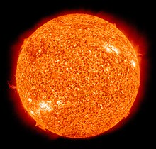

تنها ستارهٔ سامانهٔ خورشیدی است و در مرکز آن جای دارد. خورشید یک کُرهٔ کامل است که از پلاسمای داغ ساخته شده است و در میانهٔ آن میدان مغناطیسی برقرار است.[۹][۱۰] این ستاره که قطری نزدیک به ۱٬۳۹۲٬۰۰۰ کیلومتر دارد، سرچشمهٔ اصلی نور، انرژی، گرما و زندگی بر روی زمین است. خورشید نخستین جسم در منظومهٔ شمسی بر پایهٔ جرم و حجم میباشد. قطر خورشید نزدیک به ۱۰۹ برابر قطر زمین و جرم آن ۳۳۰ هزار برابر جرم زمین برابر با ۲×۱۰۳۰ کیلوگرم است. این مقدار ۹۹٫۸۶٪ کل جرم سامانه خورشیدی است.[۱۱] انفجار نهایی یک ستارهٔ سنگین را ابرنواختر مینامند، ولی خورشید هیچگاه چنین انفجاری را تجربه نخواهد کرد؛ زیرا کمترین جرم مورد نیاز برای رخداد یک ابرنواختر، هشت برابر جرم خورشید است.[۱۲] از نظر شیمیایی سه-چهارم جرم خورشید را هیدروژن و باقیماندهٔ آن را بیشتر هلیم میسازد. پس از هیدروژن و هلیم، دیگر عنصرهای سازندهٔ خورشید عبارتند از: اکسیژن، کربن، نئون و آهن و غیره، این عنصرها سازندهٔ ۱٫۶۹٪ از جرم خورشید هستند که این مقدار خود ۵٬۶۲۸ برابر جرم زمین است.[۱۳]. خورشید در ردهبندی ستارگان بر پایهٔ ردهبندی طیفی، در دستهٔ G2V جای دارد و بهصورت غیررسمی با نام کوتولهٔ زرد-نارنجی از آن یاد میشود. چون پرتوهای پیدای خورشید در طیف زرد-سبز شدیدتر است، (هر چند که رنگ آن از سطح زمین، سفید دیده شود) ولی وجود پراکندگی نور آبی در جو، علت زرد دیدهشدن آن است (پراکندگی رایلی).[۱۴][۱۵] همچنین در برچسب ردهبندی طیفی، G2، گفته شده که دمای سطح خورشید نزدیک به ۵٬۷۷۸ کلوین (۵٬۵۰۵ سانتیگراد) است و در V گفته شده است که خورشید مانند بیشتر ستارگان، یک ستارهٔ رشتهٔ اصلی است و در نتیجه انرژی خود را از راه فرایند همجوشی هستهای هسته اتمهیدروژن به هلیم فراهم میکند و در هر ثانیه، در هستهٔ خود، ۶۲۰ میلیون تُن هیدروژن را دچار همجوشی میکند. در دورهای کیهانشناسان میگفتند که خورشید نسبت به دیگر ستارگان، ستارهای کوچک و ناچیز است، ولی امروزه بر این باورند که خورشید از ۸۵٪ ستارگان کهکشان راه شیری درخشانتر است. چون بیشتر آنها کوتولهٔ سرخ هستند.[۱۶][۱۷] بزرگی قدر مطلق خورشید ۴٫۸۳+ است. البته چون خورشید نزدیکترین ستاره به زمین است، به همین دلیل، خورشید درخشانترین جرم در آسمان دانسته میشود و قدر ظاهری آن ۲۶٫۷۴- است.[۱۸][۱۹] تاج خورشیدی پیوسته در حال پراکندن بادهای خورشیدی در فضا است. این بادها، جریانهایی از ذرههای باردارند که تا فاصلهای نزدیک به ۱۰۰ واحد نجومی توان دارند. حبابهای ساختهشده در محیط میانستارهای که در اثر بادهای خورشیدی ساخته شدهاند، بزرگترین سازهٔ پیوستهٔ پدیدآمده در سامانهٔ خورشیدیاند.[۲۰][۲
در تاریخ ۲۴ شهریور ۱۳۹۹ در حساب توییتری رسانهٔ خبری دیلیمیل انگلستان اعلام شد که نشانههایی احتمالی از حیات (وجود گاز فسفین) در این سیاره دیده شده است![۱۹] زهره در آسمان زمین هنگام غروب این سیاره یکی از سیارههای سنگی و فشرده و دارای آتشفشانهای فعال، زمینلرزه و رشتهکوه است. زمان لازم برای یکبار گردش این سیاره به دور خورشید ۲۲۵ روز زمینی است.[۲۰] ناهید (زهره) در سنجش با بیشتر سیارهها در منظومهٔ شمسی از جمله زمین، کرویتر است و به علت چرخش بسیار آهسته دور محوری آن، پدیدهٔ تورفتگی یا مسطح شدن قطبها و برآمدگی یا تورم نواحی استوایی در آن، کمتر از دیگر سیارهها رخ میدهد. طول یک شبانهروز در سیارهٔ زهره از یک سال این سیاره کمی بلندتر است.